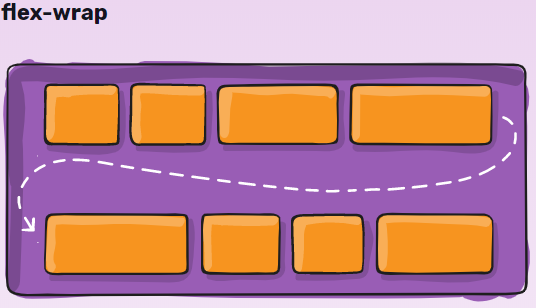
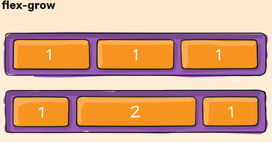
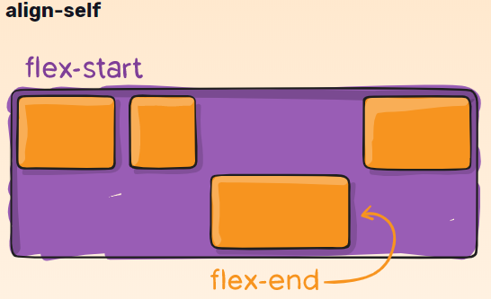

Esto define un contenedor flexible; En línea o bloque dependiendo del valor dado. Permite un contexto flexible para todos sus hijos directos.Tenga en cuenta que las columnas CSS no tienen efecto en un contenedor flexible.
Row(Default)
Comportamiento que hace que mis casillas se coloquen en posición normal en lo que nos referimos al orden.
Row-Reverse
alteramos los ejes (el principio ahora es el final sólo a las cajitas) en los párrafos no pasa porque son muy largos, si tuviéramos el texto en una línea estaría el texto orientado a la derecha las ordena horizontalmente.
Column
Los párrafos se colocan de arriba abajo.
Column-reverse
Los párrafos se colocan de abajo arriba
Recordatorio: el eje transversal es el eje perpendicular al eje principal. Su dirección depende de la dirección del eje principal.
Por defecto, todos los elementos de flexión intentarán encajar en una línea. Puede cambiar eso y permitir que los elementos se ajusten según sea necesario con esta propiedad. los elementos flexibles se envolverán en varias líneas, de arriba a abajo.
Wrap
flex wrap del padre. Ajusta al tamaño de la pantalla, se hace responsive. Siempre hasta el límite del tamaño completo.
Multilíneas, la dirección se define por flex-direction.

NoWrap (Default)
Todos los elementos flexibles estarán en una línea.
Otros

El valor predeterminado es 0 1 auto.
Los números son ratios. El segundo número hace que decrezca y el primero que crezca.
Wrap-Reverse
Los elementos flexibles se envolverán en varias líneas de abajo hacia arriba.
Multilíneas, opuesta a la dirección definida por flex-direction.
Define el comportamiento predeterminado de cómo los elementos flexibles se distribuyen a lo largo del eje transversal en la línea actual. Puedes considerarlo como la justify-contentversión para el eje transversal (perpendicular al eje principal).
Flex-Start
Desde el principio y en el sentido que marque el flex direction o el que está por defecto.
Flex-end
No cambia la dirección sin ola justificación a no ser que hagamos un row-reverse.
Center
Me coloca todos los elementos en el centro (respetándose unos a otro).
Space-between
Hace que se reparta el espacio entre ellos sin contar el margen izq y derecho del primero y el segundo.
Space-around
Ponemos alredor del bloque márgenes por defecto (También al primero y al último no como el de arriba).
Stretch (Default)
En el eje secundario los elementos del eje vertical estén estirados. Siempre ocupará lo que se le marque
Flex-start
Se queda sin estiramiento, se quedan por defecto
Flex-end
Deja el espacio de arriba a mi disposición (Ahora nos deja espacio porque tenemos min-height de 60 y ocupa lo suyo pero abajo).
Center
Nos coloca todos en el centro respecto a la pantalla.
Otros
Aling-Self

Esto permite que la alineación predeterminada (o la especificada por align-items) se sobrescriba para los elementos flex individuales.
Flex-Start
Reparte los distintos elementos siempre que existan varias líneas de elementos del conjunto de las líneas.
Center
Las dos líneas se nos centran en toda la pantalla.
Space-Around
Se comportan repartiéndose entre ellas todo el espacio.
Space-Between